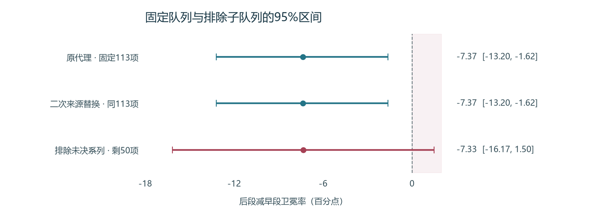

同一场胜利，为何重排榜单？
西班牙官方奖牌榜第15，运动员金牌行榜第5。
- 怎样检验
- 固定届次、代表团、奖牌颜色与名次规则，比较小项、团队均分、运动员行，并逐运动剔除。
- 什么会推翻它
- 若统一排名规则或剔除某运动后重排消失，就缩小口径效应的主张。均分也会受成员匹配缺口影响。
- 修正后的结论
- 统计单位改变了团队成员的权重，不意味着IOC多发奖牌，也不存在脱离问题的唯一公平榜。
六个赛题方向，四个自拟视角。我们从统计口径、国家、项目与运动员记录出发，把奥运史里容易被总榜遮住的故事重新摆到台前。
一张榜单引出统计单位，一次反常引出解释机制，最后回到被记录的人与没有被记录的历史。
沿着三个问题，检查原判断如何被证据修正。
西班牙官方奖牌榜第15，运动员金牌行榜第5。
巴西2016自身份额下降0.57个百分点，相对匹配组却为正0.13个百分点。
固定113个连续同名小项后，卫冕率仍由34.51%降至27.14%。
三篇承担主论证，其余专题作为扩展探索。历史555项已完成独立二次来源对照，仍不等于现行IOC逐项确认。
阅读完整研究闭环 ↗历史三届采用三种来源方案复算：保留原代理、替换555项二次来源、排除555项。替换涉及31个小项、64个奖牌字段。
| 届次 | 替换后金牌名次变动代表团数 | 最大名次位移 | 排除后剩余小项 |
|---|---|---|---|
| 2008 | 11 | 19 | 121 |
| 2012 | 26 | 19 | 118 |
| 2016 | 0 | 0 | 116 |
二次来源替换后三届金牌数前三名次集合相同；这不保证其他名次稳定。这里固定每届代表团池，按金牌数并列排名，不能称为IOC现行官方榜。
排除后只剩355个小项，运动构成改变；2012、2016的金牌数前三名次集合也改变。它是子集压力测试，不能替代完整奖牌榜。二次来源替换同样不是官方认证。
巴黎2024官方小项分析不依赖这555项，可作为主证据。历史逐队精确数值应附版本与敏感性。冠军延续已追加来源敏感性：同113项替换不变，排除后50项的区间跨零。主场运动员行17案已复现，另建小项三情景对照：平均关联为正，巴西个案依方法改变。原RF/GB可迁移核心已追加时序重跑与2028同口径重训；新增运动、资格及完整集成区间仍未获同构验证。
把名次、规模与项目份额放在一起，统计单位的影响不再只是脚注。
主场、小队伍与王朝，需要共同面对趋势、样本选择和反例。
代表团、人物、女性与项目档案，留下不同类型的历史缺口。
十个专题的关键反例直接放在这里。展开每一条，查看替代口径、修正后的判断与证据边界；再按需进入完整专题。
固定113个1960—2016连续小项，卫冕率从34.5%降至27.1%
这是一张阅读索引。红色表示原直觉对口径或选例敏感；蓝色表示当前数据不足以验证更强的推断。下载完整核验矩阵 ↗ 五个核心结论的量化检验 ↗
这些历史经验，能带我们走向哪里？
进入洛杉矶2028 ↗同一批113个连续小项，更换对应历史金牌来源后，卫冕率仍由34.51%降至27.14%，下降7.37个百分点，成组95%区间为[−13.20, −1.62]。
更严格的排除检验没有同样明确。剔除涉及未决记录的完整小项系列后只剩50项：39.00%降至31.67%，差值−7.33个百分点，区间[−16.17, +1.50]跨过零。原代理同50项也得到相同结果；这是样本筛选的影响，不能解释为来源修订推翻了结论。

研究的是代表团在同一小项的金牌控制权，金牌代表团集合有交集即视为延续；并非个人冠军寿命。早段为1964—1976，后段为1996—2016，按小项成组重抽样10000次，种子42。555条二次来源记录精确对应550条S3观测，5条不猜测映射；全样本10个金牌集合修订影响17条转移，6条卫冕判定改变。
二次来源不是现行IOC逐项认证，排除后50项也不能称为官方认证样本。规则变化、身份连续性、抵制与选择偏差仍存在，竞争加剧等机制尚未被因果识别。原图保留原代理口径，新增图单列来源敏感性。
15个共同历史主办案例中，小项原代理平均差值为+3.02个百分点，二次来源替换后为+3.01；排除未决同名系列后为+2.87。对应成组95%区间均在零以上。这是样本内关联，不能证明主办的因果收益。
巴西2016：原“五队匹配、运动员行”比较为+0.13个百分点；小项合成对照原代理为−0.11，替换后为−0.17，排除后为−1.22。统计单位与比较方法同时变化，不能拆分归因；“巴西仍有相对优势”仅适用于原来的特定比较。英国2012在排除情景也由正转负，不能以平均值替每个案例背书。
| 案例 | 小项原代理 | 二次来源 | 排除系列 |
|---|---|---|---|
| 中国2008 | +4.79 | +4.77 | +1.07 |
| 英国2012 | +2.75 | +2.70 | -0.13 |
| 巴西2016 | -0.11 | -0.17 | -1.22 |
原运动员行合成对照17个案例已逐例复现，最大误差小于0.00001个百分点。另建1948—2016的小项代理，三方案共同15案；原模型17案与新模型15案不可直接作增减比较。555项记录不包含个人名单，因此没有据此重分配运动员奖牌。
B仅替换555项的奖牌代表团；C在所有历史年份剔除相关209条同名小项系列，运动构成明显改变，不能称为纠偏后的真值。各案例固定原小项情景的对照池，分别重拟合权重；参赛行特征保持不变。小项代理同NOC同色多枚可能合并，二次来源及剩余子集均非现行IOC逐项认证。图中区间按主办案例重抽样；另按13个主办代表团整簇重抽样，三方案区间也均为正（详见CSV）。两者均不消除选择、抵制、身份与规则混杂。